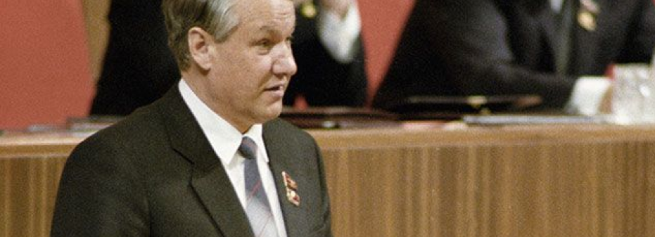
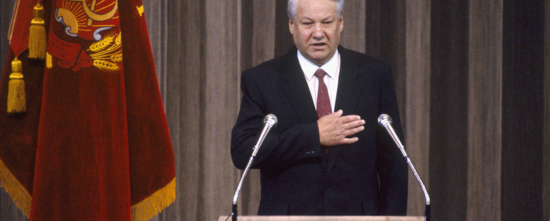
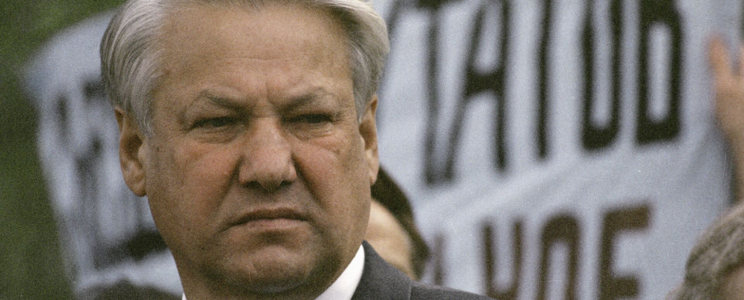
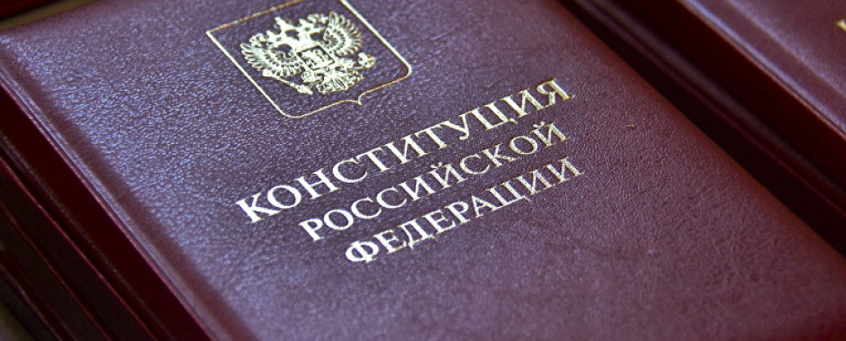
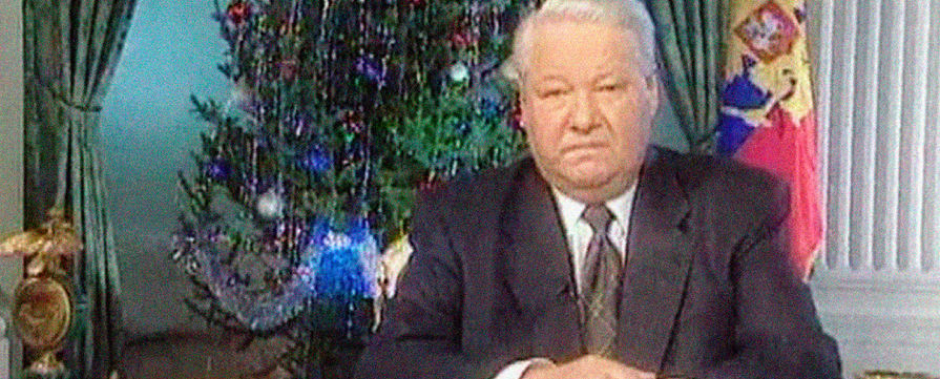

Первый президент новой России
Борис Ельцин — лидер, изменивший ход истории, открывший путь к демократии и свободе. Узнайте о человеке, чьи решения сформировали современную Россию.
Борис Ельцин — лидер, изменивший ход истории, открывший путь к демократии и свободе. Узнайте о человеке, чьи решения сформировали современную Россию.
Борис Ельцин (1931–2007) — первый президент Российской Федерации, сыгравший ключевую роль в переходе страны от советской системы к новой эпохе. Родился 1 февраля 1931 года в селе Бутка, Свердловская область, в семье рабочих. Образование получил в Уральском политехническом институте, после чего начал карьеру в строительстве, быстро продвигаясь по служебной лестнице.
1985
1990
1991
1993
1999
В Москве, заняв пост секретаря ЦК КПСС, начал борьбу с партийной бюрократией, открыто критикуя коррумпированную систему.
Ельцин становится председателем Верховного Совета РСФСР и выступает за суверенитет России, став символом перемен.
Избран первым президентом России. Его решительное противостояние ГКЧП в августе 1991 года стало символом борьбы за свободу.
Принятие новой Конституции утвердило демократические принципы управления страной.
Ушел в отставку, мирно передав власть Владимиру Путину, оставив страну на пути реформ.
Борис Ельцин — личность, о которой трудно говорить однозначно. Он воплощал в себе стремление к свободе, силу воли и готовность идти на риск ради будущего страны. История его жизни — это путь от скромного инженера до первого президента России, который навсегда изменил ход её развития.
Кто ещё мог встать на танк в августе 1991 года и бросить вызов путчистам? Этот момент стал символом новой России, а сам Ельцин — её защитником. Он показал, что лидер — это не только власть, но и готовность рисковать ради свободы народа.
Ельцин всегда старался быть "своим" для каждого россиянина. Он не скрывал своих слабостей и общался с людьми открыто, что делало его простым и понятным. Люди видели в нём не только политика, но и человека с реальными переживаниями, который искренне хотел лучшего будущего для своей страны.
Да, его решения были смелыми и часто противоречивыми. Переход к рыночной экономике, Конституция 1993 года, курс на демократию — всё это было новым и сложным, но именно благодаря этим реформам Россия сделала шаг к современности.
Разработал дизайн, собрал интересную и нужную информацию и сделал сайт студент ЦОС24Сиса Проскурин Кирилл Александрович
Если сайт вам понравился, можете скинуть сайт своим друзьям и коллегам, так больше узнают какие крутые студенты учаться у нас
 Телеграмм-канал с моей работой по Web-разработке
Телеграмм-канал с моей работой по Web-разработке